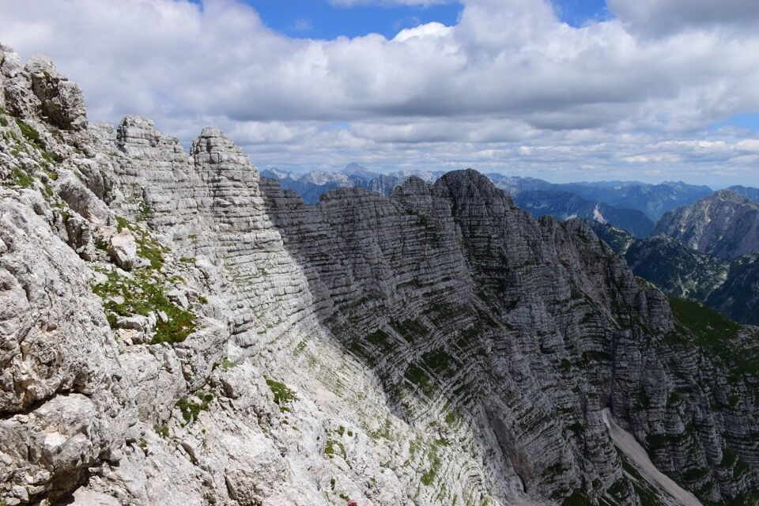

Facile anello in contesto incredibilmente bello e panoramico: non a caso è una delle escursioni consigliate da Trois Neris.
Partire dall'altopiano del Montasio, soprattutto alle prime luci del giorno, è sempre stupendo.
Laggiù il Montasio con evidente il cengione Sud e l'alpinistico canalone Sud che qualcuno ogni tanto percorre.
Ecco là il Piròn del Larice (foto scattata al pomeriggio).
Raggiungiamo faticosamente il Piròn del Larice e entriamo nel vallone del Buìnç, luogo assolutamente solitario in un contesto affollato.
Il vallone del Buìnç è amatissimo dagli stambecchi maschi... credo che mai abbiamo visto così tanti stambecchi in una giornata.
Con facile ma non banale percorso, peraltro non obbligato, raggiungiamo l'ampia sella Buìnç...
...dove il panorama è strepitoso.
Verso la Spragna e l'alta Saisera.

Immenso e maestoso lo Jôf Fuart: lo spallone con verdi in centro foto è la Cima da lis Codis di cui Kugy parla spesso nel suo libro. M'interesserebbe molto percorrere la via da lis Codis data di II grado...
Si vedono sia la Cengia degli Dei che la Cengia dei Camosci (che due anni più tardi percorreremo).
Usciamo dalla galleria e...

Con facile percorso, un po' da cercare, saliamo al Modeòn del Buìnç...
...cima con un panorama stupendo.
Verso il Foronòn e il Montasio.
Per questo versante sale la non difficile Via dei Pilastri allo Jôf Fuart.
Verso le Madri dei Camosci: solo ora mi accorgo che c'era qualcuno in cima alla Torre!
La continuazione della cresta... che bel percorso che ci aspetta!
Torniamo indietro e andiamo sul Foronòn: qui il versante Ovest del Modeòn su cui siamo saliti.
Arditissimo torrione sul versante Sud del Modeòn.
Il tratto più bello - e devo dire davvero bellissimo, uno dei più suggestivi della montagna friulana - è scendendo dal Modeòn, con davanti la cresta della Cima de la Puartate fasciata da un'infinità di cenge.
Il versante Nord di forca de la Val... poco raccomandabile.
Troviamo qualcuno sulla cima del Cregnedùl.
Stupenda visuale sulla val rio del Lago!
Scendendo dal Cregnedùl, ecco il versante Sud della forca da la Val: molto frequentato dagli sciatori, è percorribile pure in estate.
Da Nevea ecco il vallone del Buìnç che molte ore prima abbiamo risalito.